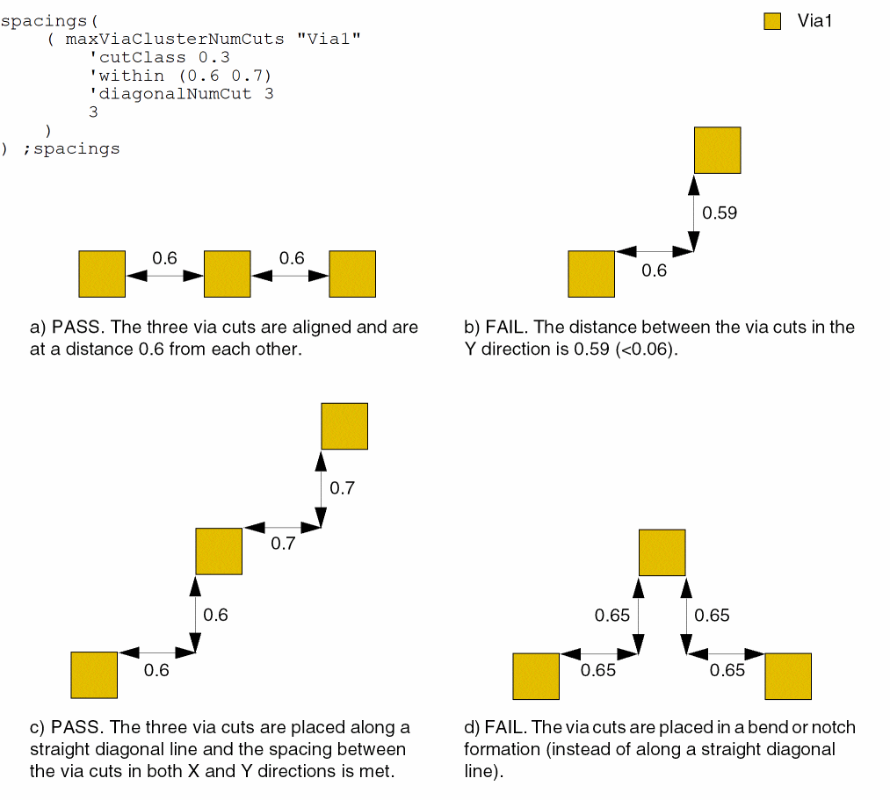
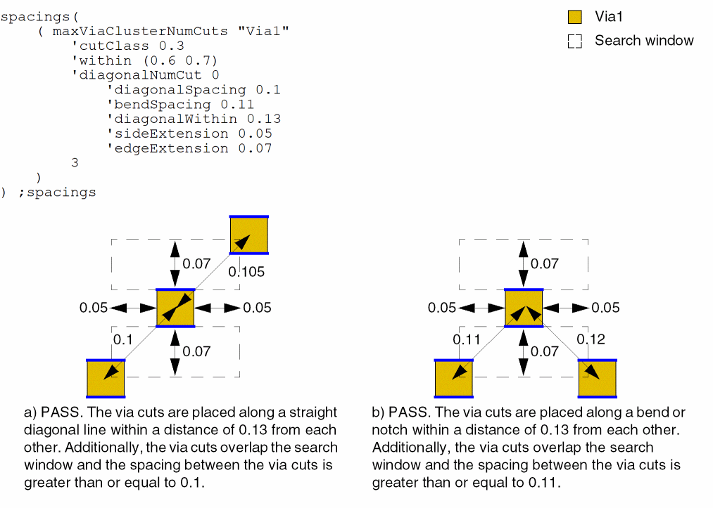
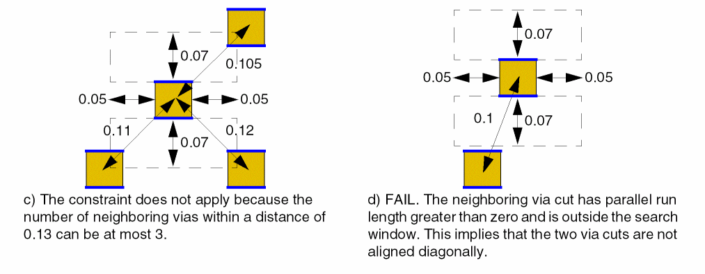
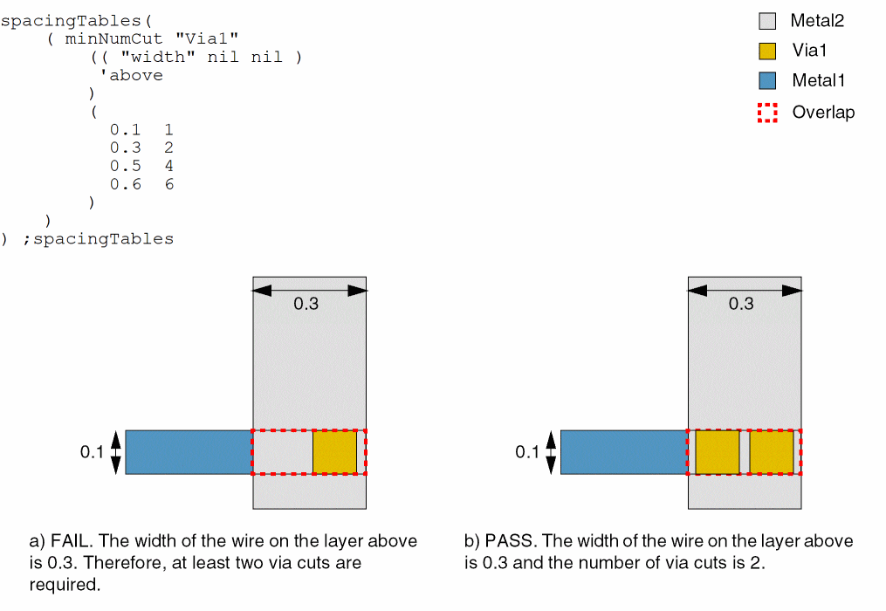
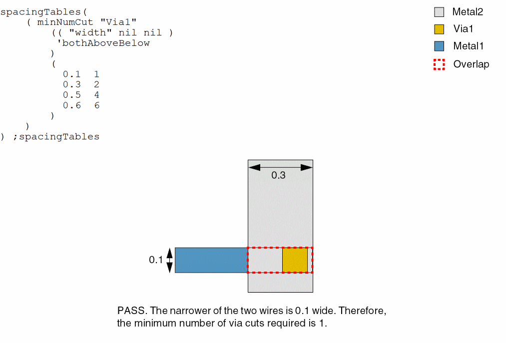
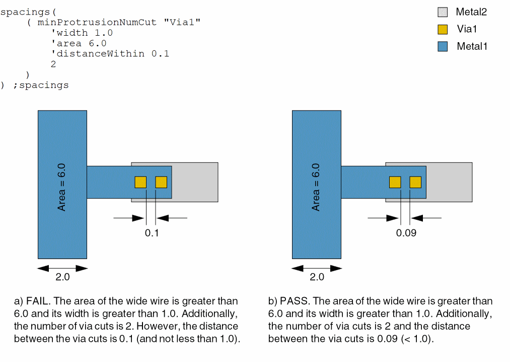
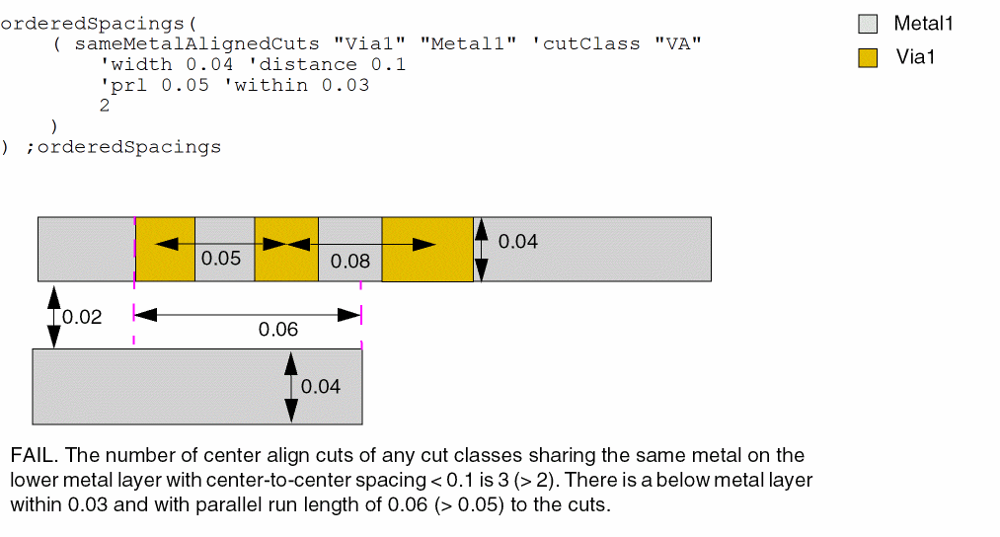
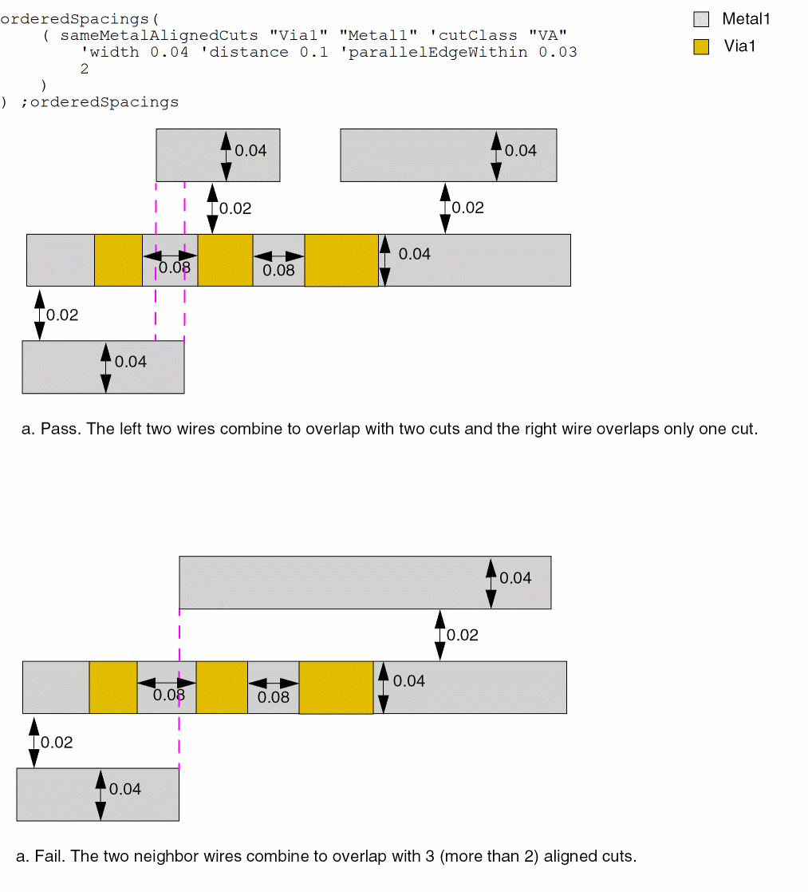
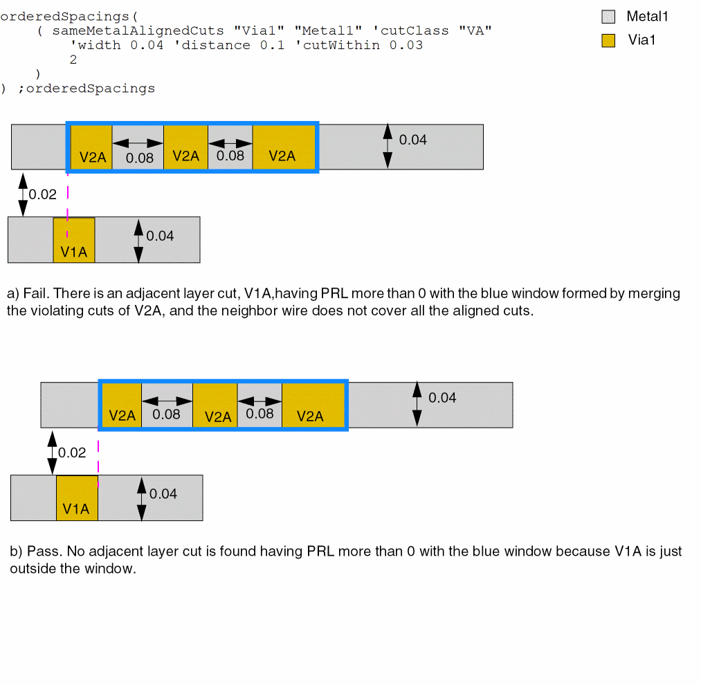

9
NumCut Constraints
This chapter includes the following constraints:
maxViaClusterNumCuts
spacings( ( maxViaClusterNumCutstx_layer'cutClass {f_width| (f_width f_length) |t_name} 'within (f_minWithin f_maxWithin) ['diagonalNumCutx_diagonalNumCut['diagonalSpacingf_diagonalSpacing'bendSpacingf_bendSpacing'diagonalWithinf_diagonalWithin'sideExtensionf_sideExt'edgeExtensionf_edgeExt] ]x_numCuts)
) ;spacings
Specifies the maximum number of consecutive via cuts of the specified cut class allowed in a cluster and the cut-to-cut spacing that must be satisfied. Via cuts that satisfy the specified spacing are defined to be in the same via cluster.
This constraint allows the spacing between via cuts to be smaller if via cuts are placed in a particular configuration. The via cuts can be placed in a horizontal line, along a straight diagonal line, or diagonally in a bend or notch formation.
Values
|
The layer on which the constraint is applied. Type: String (layer and purpose names) or Integer (layer number) |
|
Parameters
|
The cut class to which the constraint applies, specified by width, by width and length, or by name (as defined in a cutClasses constraint). |
|
|
The distance between consecutive via cuts in a cluster must be greater than or equal to minWithin and less than or equal to maxWithin. |
|
|
The number of diagonal via cuts in a cluster (that is, via cuts placed along a straight diagonal line) must be less than or equal to this value. |
|
|
|
|
|
These parameters can be specified when diagonalNumCut is 0, which implies that there is no limit on the number of via cuts that can be placed diagonally and a bend or notch is allowed. If via cuts are placed diagonally without a bend or notch, a via cut can have at most two neighboring via cuts at a distance less than or equal to diagonalWithin, with spacing greater than or equal to diagonalSpacing. If via cuts are placed to form a bend or notch, a via cut can have at most two non-perfectly-aligned neighboring via cuts in a bend or notch formation at a distance less than or equal to diagonalWithin, with spacing greater than or equal to bendSpacing.
Additionally, the neighboring via cuts placed along the diagonal or in a bend or notch formation must be found within a search window formed by extending (on both sides) by sideExt the via cut edges that satisfy the All measurements—diagonalWithin, diagonalSpacing, and bendSpacing—are center-to-center. |
|
Examples
- Example 1: maxViaClusterNumCuts with cutClass, within, and diagonalNumCut
- Example 2: maxViaClusterNumCuts with cutClass, within, diagonalNumCut, diagonalSpacing, diagonalWithin, sideExtension, and edgeExtension
Example 1: maxViaClusterNumCuts with cutClass, within, and diagonalNumCut
The number of 0.3x0.3 Via1 via cuts in a cluster cannot exceed 3. The following additional conditions must also be met:
- The distance between via cuts must be greater than or equal to 0.6 and less than or equal to 0.7.
-
At most three via cuts can be placed along a straight diagonal line.

Example 2: maxViaClusterNumCuts with cutClass, within, diagonalNumCut, diagonalSpacing, diagonalWithin, sideExtension, and edgeExtension
The number of 0.3x0.3 Via1 via cuts in a cluster cannot exceed 3. The following additional conditions must also be met:
- The via cuts when placed along a straight diagonal line must be within a distance of 0.13 from each other and the spacing between them must be greater than or equal to 0.1.
- The via cuts when placed in a bend or notch formation must be within a distance of 0.13 from each other and the spacing between them must be greater than or equal to 0.11.
-
The via cuts that satisfy the two conditions listed above must be found within a search window formed by extending by 0.05 the via cut edges that satisfy the
minExtensionEdgeconstraint with'twoSidesparameter (in blue) on both sides. The other dimension of the search window is equal to 0.07.

minNumCut
spacingTables( ( minNumCuttx_cutLayer(( "width" nil nil ) ['cutClass {f_cutWidth| (f_cutWidth f_cutLength) |t_name}] ['distanceWithinf_within] ['above | 'below | 'bothAboveBelow] ['sameMetalOverlap | 'fullyEnclosed] [f_default] ) (g_table) )
) ;spacingTables
Specifies the minimum number of cuts that a via object or a via instance must contain when connecting two wide wires or a wide wire and a pin. The number of via cuts required depends on the width of the wires. If 'distanceWithin is specified, only the via cuts that are within the specified distance from each other are counted.
Usually, wide wires carry more current, and if you change layers between two wide wires, you need a sufficient number of via cuts to carry an equivalent amount of current. Using multiple via cuts, instead of just one, also increases reliability.
The minNumCut constraint can be specified in the following constraint groups:
-
Wire Edit: The
minNumCutconstraint can be specified in a wire edit constraint group, which can then be set as the default constraint group for creating and editing wires by using either thewireConstraintGroupenvironment variable or by selecting it in the Options – Editor – Default Wire Constraint Group list. -
Foundry: The definition of
minNumCutin the wire edit constraint group overrides theminNumCutdefinition available in thefoundryconstraint group. -
Net: The
minNumCutconstraint can be specified for a particular net in a net constraint group. Currently, the router supports only a limited number of constraints in the net constraint group, includingminWidth,minNumCut,minSpacing,validLayers, andvalidVias.
Values
Parameters
|
The cut class to which the constraint applies, specified by width, by width and length, or by name (as defined in a cutClasses constraint). |
|
|
The distance between the via cuts must be less than this value for the via cuts to be counted. |
|
|
The wire that is used to determine the number of cuts required. By default, the number of cuts required is determined based on the width of the wider of the two wires.
|
|
|
The minimum number of cuts required is determined based on the width of the wider wire.
|
|
Examples
- Example 1: minNumCut with above
- Example 2: minNumCut with bothAboveBelow
- Example 3: minNumCut with sameMetalOverlap
- Example 4: minNumCut with fullyEnclosed
Example 1: minNumCut with above
The width of the wire on the layer above determines the number of cuts that a via must contain.
- Width >= 0.1; via cuts = 1
- Width >= 0.3; via cuts = 2
- Width >= 0.5; via cuts = 4
-
Width >= 0.6; via cuts = 6

Example 2: minNumCut with bothAboveBelow
The width of the wires on the layers above and below determine the number of cuts that a via must contain.
- Width >= 0.1; via cuts = 1
- Width >= 0.3; via cuts = 2
- Width >= 0.5; via cuts = 4
-
Width >= 0.6; via cuts = 6

Example 3: minNumCut with sameMetalOverlap
The width of the wider wire determines the number of cuts that a via must contain.
The via is contained in the overlap of the two wires, and this overlap partly covers the wider of the two wires.
Example 4: minNumCut with fullyEnclosed
The width of the wider wire determines the number of cuts that a via must contain.
All via cuts must be fully enclosed by the wide wire.
minProtrusionNumCut
spacings( ( minProtrusionNumCuttx_cutLayer['cutClass {f_width| (f_widthf_length) |t_name}] ['distancef_distance] 'widthf_width{'areaf_area['distancef_distance] | 'lengthf_length'distancef_distance} ['distanceWithinf_within] ['above | 'below]x_numCuts) ( minProtrusionNumCuttx_cutLayer(f_distance f_length f_widthx_numCuts) )
) ;spacings
Specifies the minimum number of cuts a via must have when the via is placed on a thin wire (protrusion) directly connected to a wide wire or pin.
Values
|
The cut layer on which the constraint is applied. Type: String (layer and purpose names) or Integer (layer number) |
|
|
The number of via cuts must be greater than or equal to this value. |
Parameters
|
The cut class to which the constraint applies, specified by width, by width and length, or by name (as defined in a cutClasses constraint). |
|
|
The constraint applies only if the distance of the first via cut (on the protrusion) from the wide wire is less than this value. |
|
|
The constraint applies only if the width of the wide wire is greater than this value. |
|
|
The constraint applies only if the length of the wide wire is greater than this value. |
|
|
The constraint applies only if the width of the wide wire is greater than width and the area of the island comprising the wide wire and the protrusion is greater than this value. If width is less than the width of the default routing wire and is specified along with area, the minimum number of cuts required on the routing vias varies based on the area of the routing wire on the layer. If only area and width are specified, only the thin wire connected to a wide wire is checked for the required number of via cuts. |
|
|
The distance between the via cuts must be less than this value for the via cuts to be counted. |
|
|
The metal layer to which the constraint applies. By default, the constraint applies to wires on the metal layers directly above and below the cut layer. |
|
Examples
- Example 1: minProtrusionNumCut with width, area, and distanceWithin
- Example 2: minProtrusionNumCut with distance, width, area, length, and distanceWithin
- Example 3: minProtrusionNumCut with distance, length, width
Example 1: minProtrusionNumCut with width, area, and distanceWithin
The minimum number of via cuts required on a protrusion from a wide wire is 2 if the following conditions are met:
- The width of the wide wire is greater than 1.0.
- The area of the island comprising the wide wire and the protrusion is greater than 6.0.
-
The distance between via cuts is less than 0.1.

Example 2: minProtrusionNumCut with distance, width, area, length, and distanceWithin
The minimum number of via cuts required on a protrusion from a wide wire is 2 if all of the following conditions are met:
- The distance of the first via cut (on the protrusion) from the wide wire is less than 0.5.
- The width of the wide wire is greater than 2.0.
- The length of the wide wire is greater than 3.0.
If all of the conditions listed above are met and the distance between via cuts is less than 0.3, the minimum number of via cuts required is also 2.
spacings(
( minProtrusionNumCut "cut1"
'distance 0.5
'width 2.0
'length 3.0
2
)
( minProtrusionNumCut "cut2"
'distance 0.5
'width 2.0
'length 3.0
'distanceWithin 0.3
2
)
) ;spacings
Example 3: minProtrusionNumCut with distance, length, width
This example shows an alternative way to use the minProtrusionNumCut constraint. The distance, length, and width are 0.1, 0.2, and 04, respectively, and the minimum number of via cuts is 4.
spacings(
( minProtrusionNumCut "cut1"
(0.1 0.2 0.4 4 )
)
) ;spacings
sameMetalAlignedCuts
orderedSpacings( ( sameMetalAlignedCutstx_cuttx_metal['cutClass {g_width| (g_widthg_length) |t_name}] 'widthg_width'distanceg_cutDistance['prlg_parallelRunLength'withing_within| 'parallelEdgeWithing_metalWithin['withCut] | 'cutWithing_cutWithin] ['cutClassSetListg_cutClassSetList] ['noViaMetalOverlapg_noViaMetalOverlap'otherLayerg_otherLayer]g_numCuts)
); orderedSpacings
(ICADVM20.1 Only – 95511) Specifies the maximum number of centered cuts if the cuts share the same shape above or below the metal layer.
Values
Parameters
|
The cut class to which the constraint applies, specified by width, by width and length, or by name (as defined in a cutClasses constraint). |
|
|
The constraint applies only if the width of the metal containing the cuts is less than or equal to this value. |
|
|
The constraint applies only if the spacing between the cuts is less than this value. The g_cutDistance value is measured center-to-center or edge-to-edge depending on other parameters selected. |
|
|
The constraint applies only if the layer with same-metal cuts has a neighboring wire within f_within and a parallel run length greater than f_parallelRunLength to the cuts. The width of the neighboring wire must be less than or equal to g_width. |
|
|
The constraint applies only if the distance of the neighboring wire is within f_within. |
|
|
The constraint applies only if there are neighbor wires on one or both sides on the metal layer, which all the cuts share, within the given value and touching or overlapping with more than g_numCuts. Neighbor wires on opposite sides would be merged only if they overlap. In addition, the width of this neighbor wire must also be less than or equal to g_width. The g_cutDistance value is measured edge-to-edge.
The |
|
|
The constraint applies only if a neighbor wire contains a cut on the adjacent cut layer of the current layer with parallel run length more than 0 and with a window formed by merging the violating cuts. The neighbor wire does not need to cover all the aligned cuts. The g_cutDistance value is measured edge-to-edge. |
|
|
(ICADVM20.1 Only – 95511 and 95800) The constraint applies if all cuts belong to cut classes in the list and if there is at least one cut from each cut class set. For example, if the value is |
|
|
|
|
|
(ICADVM20.1 Only – 95511 and 95800) The constraint applies only if there is a shape on g_otherLayer overlapping with the metal covering the aligned cuts by extending the given g_noViaMetalOverlap value on one of the end cuts of the aligned cuts and there is no via cut on the overlap metal. |
|
Examples
- Example 1: sameMetalAlignedCuts with width and distance
- Example 2: sameMetalAlignedCuts with prl and within
- Example 3: sameMetalAlignedCuts with parallelEdgeWithin
- Example 4: sameMetalAlignedCuts with cutWithin
- Example 5: sameMetalAlignedCuts with noViaMetalOverlap
Example 1: sameMetalAlignedCuts with width and distance
The maximum number of centered cuts is 2 when the cuts share the same metal above or below the metal layer and when the following conditions are met.
Example 2: sameMetalAlignedCuts with prl and within
The maximum number of centered cuts with center-to-center spacing less than 0.1 is 2 when these conditions are met:
- The cuts share the same metal above or below the metal layer
- There is a shape on layer tx_metal within 0.03μm with parallel run length more than 0.05μm
-
Both tx_metal shapes have width less than or equal to 0.04

Example 3: sameMetalAlignedCuts with parallelEdgeWithin
The maximum number of centered cuts with edge-to-edge spacing less than 0.1 is 2 when these conditions are met:
- The cuts share the same metal above or below the metal layer
- Neighbor wires on one or both sides on the metal layer that all the cuts share are within 0.03μm.
-
Both tx_metal shapes have width less than or equal to 0.04

Example 4: sameMetalAlignedCuts with cutWithin
The maximum number of centered cuts with edge-to-edge spacing less than 0.1 is 2 when these conditions are met:
- The cuts share the same metal above or below the metal layer
- A neighbor wire within 0.03μm contains a cut on the adjacent cut layer of the current layer
-
Both tx_metal shapes have width less than or equal to 0.04

Example 5: sameMetalAlignedCuts with noViaMetalOverlap
The maximum number of centered cuts is 2 when the cuts share the same metal above or below the metal layer and when a shape on Metal2 overlaps with the metal covering the aligned cuts by extending by 0.06.
Return to top